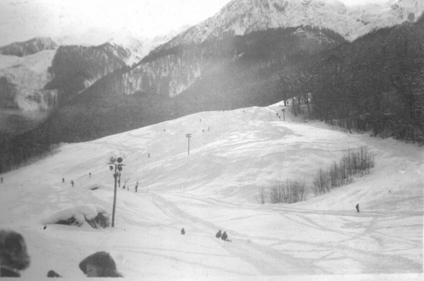
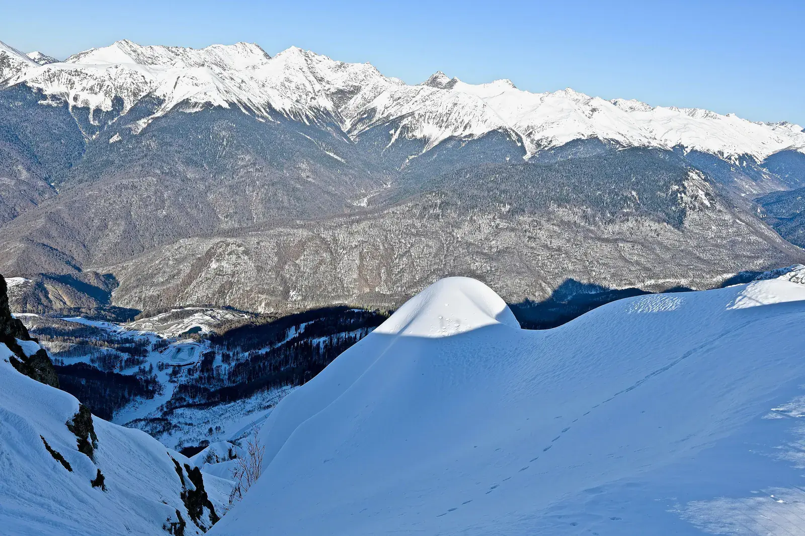
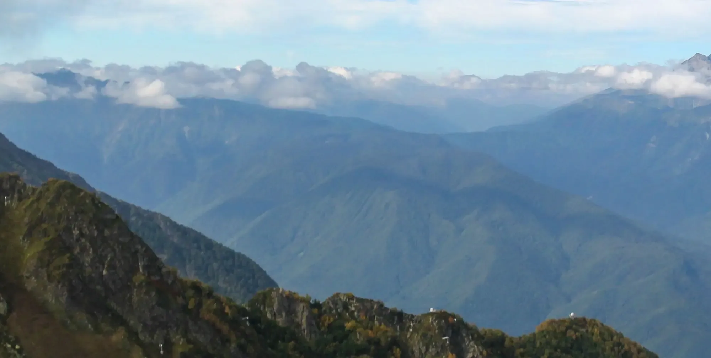
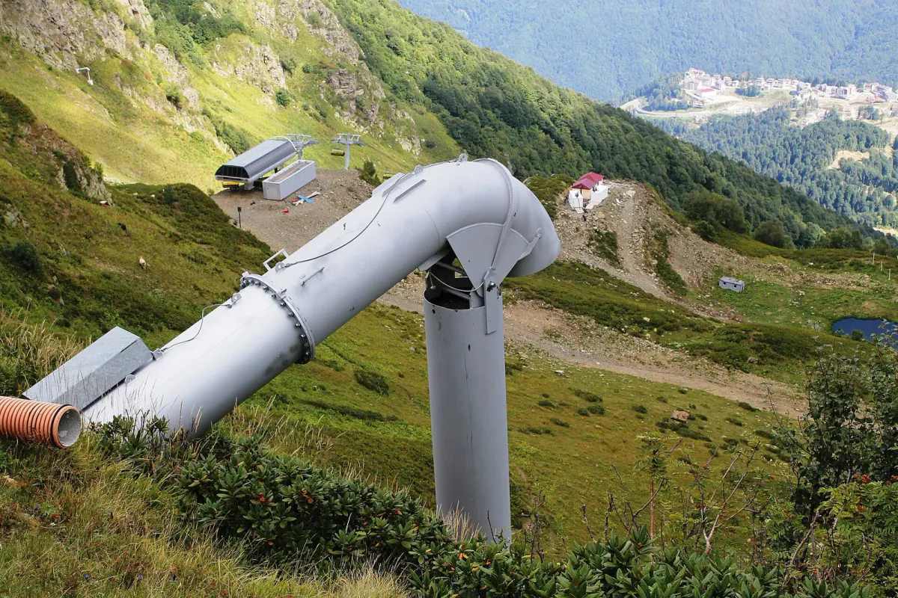
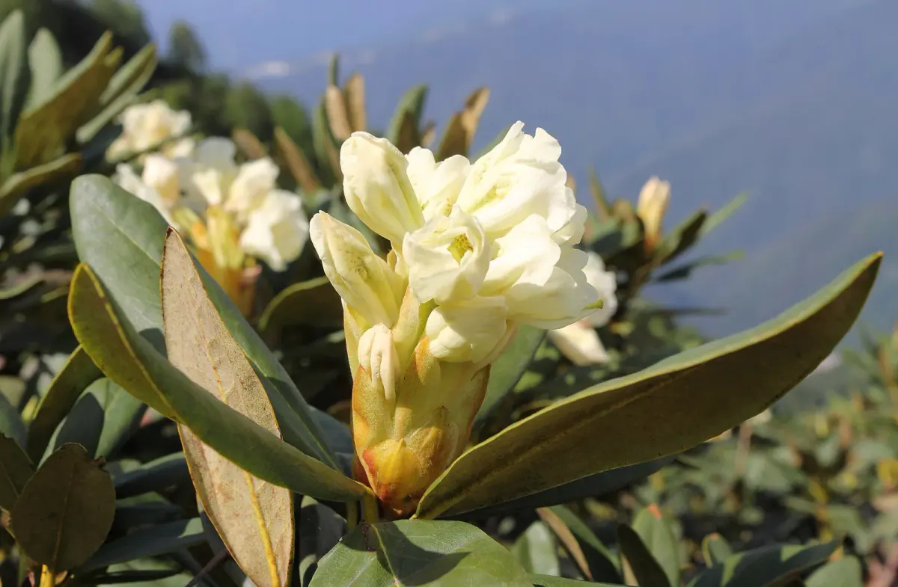
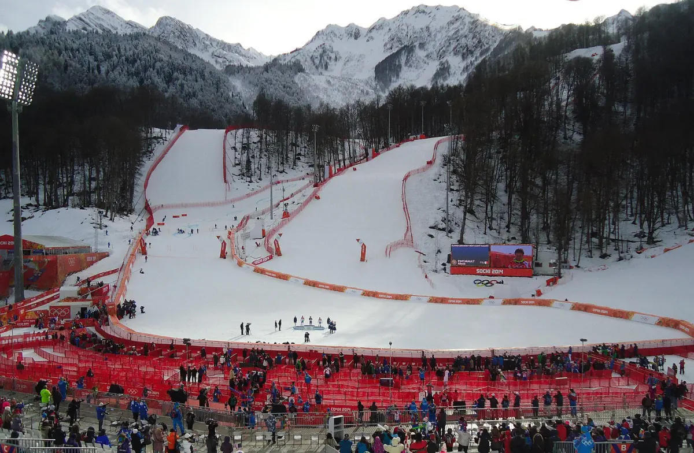

Глава десятая
2014
Роза Пик
Чтобы Сочи принял зимнюю Олимпиаду, ему понадобились горы.
Хребет Аибга, 2320 м над морем

Хребет Аибга. Вид с площадки Роза Пика, март
Фото: Aleda12, 2020, CC BY-SA 4.0
Подъём в кабине канатной дороги: от Роза Долины на высоте 560 м через Роза Плато (около 1100 м) до смотровой площадки Роза Пик на высоте 2320 м. По сайту курорта 1 октября 2026 года внизу было +19 °C, на вершине +6 °C. Наверху кадр превращается в панораму, которую можно листать вбок.




С площадки Роза Пика: гребень Аибги и хребты Кавказа. Листайте панораму вбок
Фото: Lion10, 2015, CC BY-SA 4.0
Что это
Роза Пик — смотровая площадка на хребте Аибга, на высоте 2320 метров. Сюда поднимаются на трёх канатных дорогах подряд из курорта «Роза Хутор», построенного к Играм 2014 года.
Внизу, в долине Мзымты, тепло и зелено, наверху скалы и снег: за один подъём меняется сама природа. Географы называют это . От Адлера до курорта около 40 км, а в ясный день с площадки видно море.
Как это появилось
Сорок лет от бугеля до Олимпиады
1981–1983
Лыжи раньше курорта
Архивные снимки начала 1980-х показывают на северном склоне Аибги горнолыжную базу «Спартак» с . После 1992 года её землю занял комплекс «Альпика-Сервис».
1983
Горы под охраной
5 мая 1983 года постановлением Совета министров РСФСР № 214 создан Сочинский : от моря до Главного Кавказского хребта. Будущий курорт окажется на его земле.
2007
Решение и программа
4 июля на сессии МОК в Гватемале Сочи получил Игры 2014 года: 51 голос против 47 у южнокорейского Пхёнчхана. Программа строительства, утверждённая 29 декабря, поручила «Роза Хутор» горнолыжный центр, сноуборд-парк, фристайл-центр и горную олимпийскую деревню. Частная компания, основанная «Интерросом» в 2003 году, строила часть государственного .
2010–2012
Подъёмники и проверка
В декабре 2010 года запустили «Олимпию» (от 560 до 1150 м), «Заповедный лес» (до 1340 м) и «Кавказский экспресс» (до 2320 м). Трассы проектировал Бернар Русси, олимпийский чемпион 1972 года в скоростном спуске. В феврале 2012 года здесь прошёл первый в России этап Кубка мира по горнолыжному спорту.
2014
Игры
С 9 по 22 февраля на «Розе Хутор» разыграли 10 комплектов медалей по горнолыжному спорту; сноубордисты и фристайлисты выступали рядом, в экстрим-парке. Всего на Играх вручили 98 комплектов.
после 2014
Курорт и спор о границе
Курорт работает круглый год: в сезоне 2017/2018 он принял 920 тысяч гостей. В 2015 году, по сообщениям СМИ, он получил ещё 541 га земли национального парка в , а в 2018 году Комитет всемирного наследия ЮНЕСКО потребовал от России отчёт о планах горного туризма рядом с Кавказским заповедником.
перепад высот от Мзымты до площадки: почти 25 башен Морского вокзала из главы 7, поставленных одна на другую
разница температуры внизу и наверху 1 октября 2026 года
олимпийских медалей в горных лыжах разыграли на этих склонах
5 мая 1983
От моря до Главного Кавказского хребта создан Сочинский национальный парк.
Постановление Совета министров РСФСР № 214
Архив и сегодня
Аибга до курорта и после
На что посмотреть
Четыре вещи, которые легко пропустить наверху

2320 м — ещё не вершина
Высшая точка хребта Аибга — Каменный Столб, 2509 м. Летом к нему тоже ведут подъёмники.
Фото: SKas, 2015, CC BY-SA 4.0

Белые изогнутые трубы на склонах
Это . По команде в трубе взрывается смесь кислорода и пропана, и ударная волна сбрасывает снег, пока на склоне никого нет.
Фото: Sergei Kazantsev, 2015, CC BY-SA 4.0

Кавказский рододендрон
Кремовые цветы распускаются в июне там, где лес уже кончился, а альпийские луга ещё не начались.
Фото: SKas, 2016, CC BY-SA 4.0

Чаша олимпийского финиша
Далеко внизу, около 940 м, — финишный стадион. По данным NASA, мужской скоростной спуск — около 3500 м длиной с перепадом высот 1075 м.
Фото: Sergei Kazantsev, 2014, CC BY-SA 3.0
Первоисточник
Билета на канатную дорогу мало
«Оформите пропуск в Сочинский национальный парк на npsochi.ru или в кассе справа от входа на канатную дорогу „Олимпия“. Сохраняйте пропуск до конца пребывания на курорте».
Почему это важно: курорт стоит на земле Сочинского национального парка. Туризм здесь разрешён, но по правилам парка.
Значение для Сочи
Сочи перестал быть только летним курортом: к морю добавился горный зимний сезон, с ноября по май.
Значение для России
Первая зимняя Олимпиада страны получила горы: курорт, который государство и частный инвестор строили вместе в 2003–2011 годах.
Раздел курса: 5. Вызовы будущего и развитие страны
Ценность: созидательный труд
Факт, который мало кто знает
Лыжи пришли на Аибгу за двадцать лет до курорта. В 1983 году на этом склоне уже катались: база «Спартак», один бугель и никаких кабин.
Горнолыжная база «Спартак», 1983. Автор неизвестен (источник на PastVu — блог privetsochi.ru), учебная цитата, PastVu № 2 253 720
Что вы узнали
Три вещи о Роза Пике
Выше — холоднее
От Мзымты (560 м) до площадки (2320 м) 1760 м по вертикали. 1 октября 2026 года внизу было +19 °C, наверху +6 °C, и вместе с температурой менялась природа.
Государство и инвестор
Олимпийские горы строили вместе: программа 2007 года поручила «Роза Хутор» горнолыжный центр и деревню, подъёмники заработали в 2010-м, соревнования шли с 2011 по 2014 год.
Курорт в национальном парке
На вершину нужен пропуск в Сочинский национальный парк. Вокруг курортов идёт спор, как совместить туризм и охрану природы.
Проверьте себя Почему наверху на 13 градусов холоднее, если до моря всего 40 км?
Температура зависит не от расстояния до моря, а от высоты: воздух остывает, поднимаясь. В тот день на каждые 100 м подъёма приходилось примерно 0,7 °C.
Источники, права на кадры и что осталось непроверенным
Источники
- Роза Пик — подъём на смотровую площадку 2320 м (официальный сайт курорта «Роза Хутор»)
- Роза Хутор — Википедия
- Rosa Khutor Alpine Resort — Wikipedia
- Горнолыжный спорт на зимних Олимпийских играх 2014 — Википедия
- Красная Поляна (Сочи) — Википедия
- Зимние Олимпийские игры 2014 — Википедия
- Сочинский национальный парк — Википедия
- Кавказский заповедник — Википедия
- Эстосадок — Википедия
- Déclenchement préventif d’avalanches (Gazex) — Wikipédia
- Сочинский дендрарий — Википедия (парк «Дендрарий» — структурное подразделение Сочинского национального парка)
- Сочинский национальный парк, официальный сайт (пропуска, парк «Дендрарий»)
- Красная Поляна, горнолыжная база «Спартак», «Альпика-Сервис» как это было (подборка архивных фото, 2013)
- Федеральный закон от 01.12.2007 № 310-ФЗ об организации и проведении Игр 2014 года в Сочи (kremlin.ru)
- NASA Earth Observatory: «Skiing Sochi» — снимок EO-1 ALI от 8 февраля 2014 года и подпись к нему (через Wikimedia Commons)
- OpenStreetMap: станция «Роза Пик», ele=2320 (узел 4 487 196 894); Каменный Столб, ele=2509 (узел 1 014 750 103)
- PastVu: фотографии №№ 2508674, 702 837, 2 253 720, 232 115
Кадры
- Вид с Роза Пика, март 2020: Aleda12, 2020, CC BY-SA 4.0, Wikimedia Commons.
- Роза Долина, 560 м: Александр Байдуков, 2017, CC BY-SA 4.0, Wikimedia Commons.
- Роза Плато, горная олимпийская деревня: Sergei Kazantsev, 2015, CC BY-SA 4.0, Wikimedia Commons.
- Подвесной мост над облаками: SKas, 2019, CC BY-SA 4.0, Wikimedia Commons.
- Облака под площадкой Роза Пика: Aleda12, 2020, CC BY-SA 4.0, Wikimedia Commons.
- Панорама с Роза Пика: Lion10, 2015, CC BY-SA 4.0, Wikimedia Commons; слева обрезано 15 % кадра с туманом, разрезана на три части.
- Горный кластер из космоса, 8 февраля 2014: NASA Earth Observatory (Jesse Allen, Robert Simmon), данные EO-1 ALI, общественное достояние.
- Вершина в хребте Аибга, 1904–1914: И. Г. Сутковой, из фондов Музея истории города-курорта Сочи, PastVu № 2 508 674 (учебное цитирование).
- База «Спартак» с вертолёта, 1981, автор неизвестен (источник — блог privetsochi.ru): PastVu № 702 837 (учебное цитирование).
- База «Спартак», 1983, автор неизвестен (источник — блог privetsochi.ru): PastVu № 2 253 720 (учебное цитирование).
- Старая канатная дорога, 1999, фото seakonst (собственный снимок пользователя PastVu): PastVu № 232 115 (учебное цитирование).
- Склоны «Роза Хутор», декабрь 2013: Sergei Kazantsev, 2013, CC BY-SA 3.0, Wikimedia Commons.
- Финишная зона, 19 февраля 2014: Sergei Kazantsev, 2014, CC BY-SA 3.0, Wikimedia Commons.
- Каменный Столб: SKas, 2015, CC BY-SA 4.0, Wikimedia Commons.
- Хребет Аибга осенью: Victor Gleim, 2020, CC BY-SA 4.0, Wikimedia Commons.
- Склоны Аибги летом: Ekaterina Kuzmina, 2018, CC BY-SA 2.0, Wikimedia Commons.
- Установка Gazex: Sergei Kazantsev, 2015, CC BY-SA 4.0, Wikimedia Commons.
- Кавказский рододендрон: SKas, 2016, CC BY-SA 4.0, Wikimedia Commons.
Что мы не смогли подтвердить вторым источником
- Высота горной деревни: сайт курорта — 1100 м, «Википедия» и OpenStreetMap — 1150–1170 м. В тексте дан диапазон.
- Сумма инвестиций в «Роза Хутор» (около 69 млрд руб.) и её разбивка в разных статьях «Википедии» противоречат друг другу (кредит ВЭБ — 55,7 млрд или 21 млрд); в текст цифра не вошла.
- «Одна из первых», а не «первая»: Сочинский национальный парк назван «одним из первых» по «Википедии»; первенство не подтверждено вторым источником.
- База «Спартак» (до 1992 года, три бугеля на высоте 540–750 м) известна по блогу-подборке 2013 года и подписям PastVu; архивного документа не нашли.
- Снимок 1904–1914 годов («Вершина реки Аибги»): какая именно вершина и откуда снято — не установлено. Сравнение силуэта с Каменным Столбом показало, что это другой ракурс или другая гора, поэтому пары «тогда и сейчас» в главе нет.
- Подвесной мост на фото 2019 года: работает ли он сейчас, не проверяли.
- Годовое число гостей 920 тыс. (сезон 2017/2018) взято из «Википедии» со ссылкой на курорт.
- Сервитут 541 га: сообщение СМИ в ноябре 2015 года по «Википедии», первичный документ не найден.